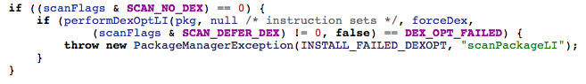

基于Art的虚拟机壳
项目方案：
1.替换apk中的dex文件为oat文件
具体实现：先把一个apk文件运行在一个art平台上，提取运行后的oat文件，然后把oat替换原来apk包中的dex文件，重新打包成apk，看能否运行；
Error:
安装失败原因探索：
/frameworks/base/services/core/java/com/android/server/pm/PackageManagerService.java源码中存在这样一段验证:

从这个结果看来，apk中必须存在一个dex文件，否则无法无法绕过这段框架的代码而抛出异常；
2.art下的动态加载
dalvik模式下的动态加载加载的是一个dex文件，那么如果在art模式下，动态加载dex还可以吗，貌似不行，因为art模式下，dex文件在安装的时候被编译成了art指令，
这时候如果再加载一个dex，除非系统能够自动把这个dex编译成art，否则应该是执行不了的，那么就需要人工地去编译dex成为art文件，然后再把这个art文件放在apk中，
这样运行的时候应该就能做到动态加载了
a.验证art模式下动态加载dex的可行性(正在进行中......)
测试结果：一个最简单的动态加载dex的例子，告诉我，在art模式下加载dex文件是可以运行的
3.伪指令替换原指令，定制虚拟机运行
用编译器llvm将dex编译成一套伪指令的oat文件，然后定制一个自己的art虚拟机来解释这种伪指令的oat文件；